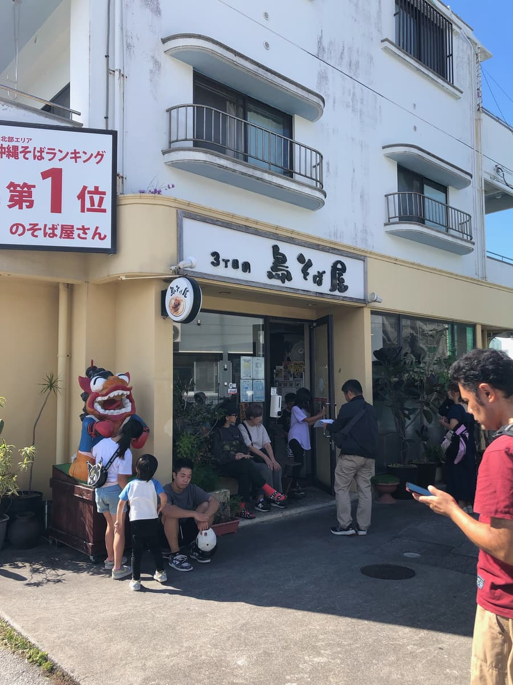
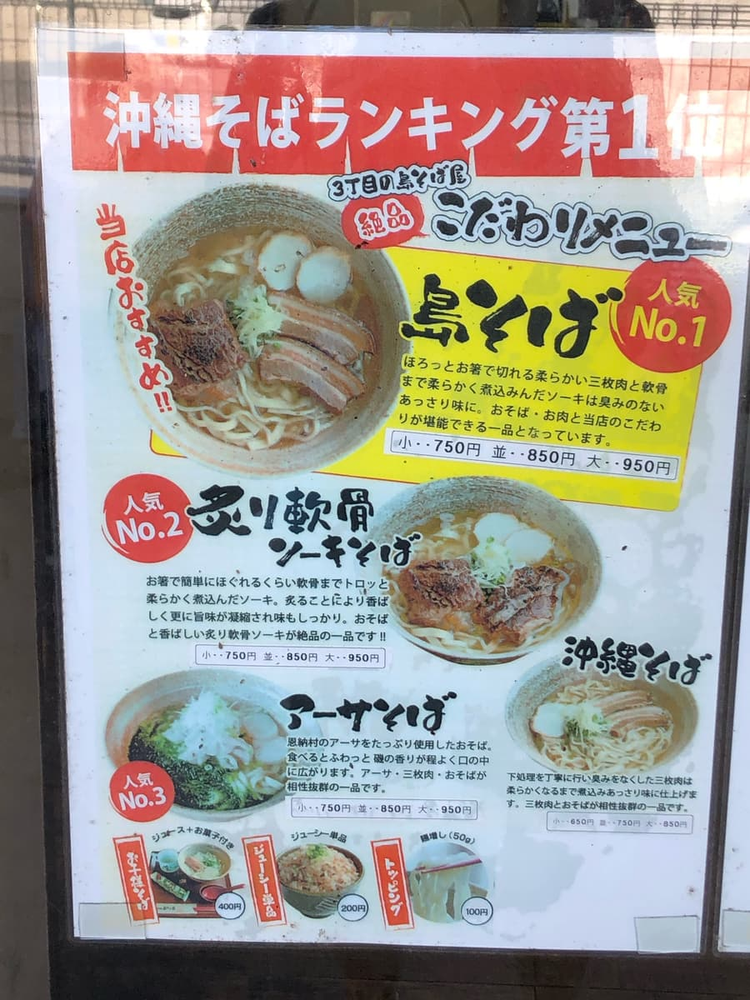
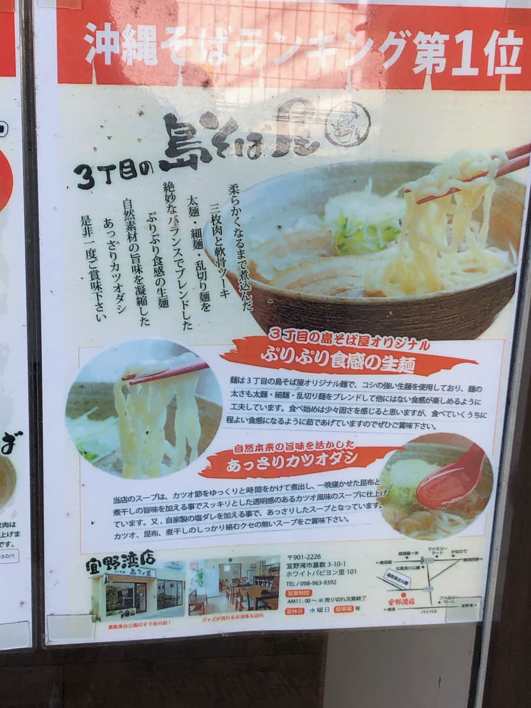
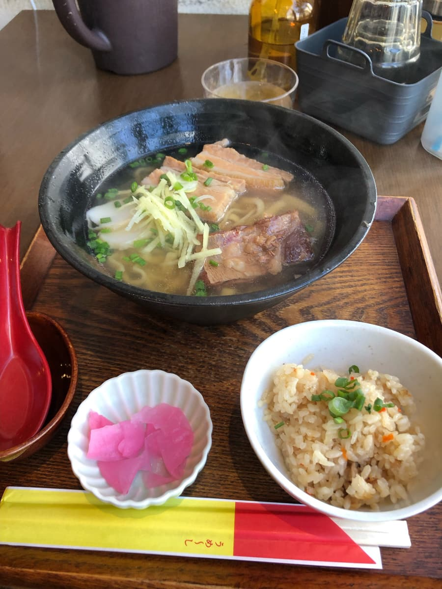
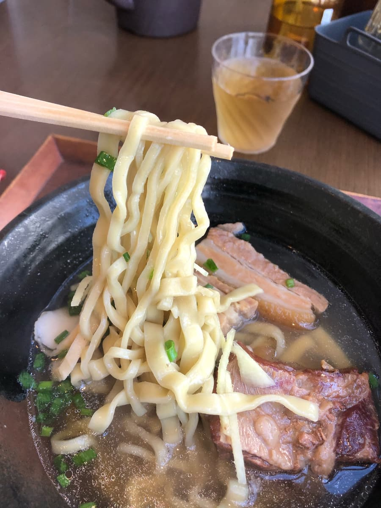

2023年11月吃的。这家店是「第13届冲绳面集章活动（2023.10.1～2024.2.29）」的参加店家，是我去的第22家／共34家😊

到了一看，不知道是不是因为假日中午，排了超长的队(*_*) 而且上面设置的看板，虽然照片里文字被切掉了，但宣传着「中部北部地区 冲绳面排行第1名」。好有自信啊，不过也让人更期待🤗
集章手册里介绍的是「岛面」，我本来打算点那个，但看到店门口的菜单，上面写着「本店推荐！！」「人气No.1」，期待感又更高了哈哈

另一则说明写着，面条是「以绝妙的比例混合粗面、细面与乱切面」。这是其他店没有的新式面条呢。汤头也说是「浓缩天然食材鲜味的清爽柴鱼高汤」。我喜欢柴鱼底的高汤，所以很期待😁

过了一会儿叫到我的号码，进到店内。我点了「岛面（普通）」。付款是在桌边先付（只收现金）。入口虽然有售票机，但似乎坏了没在使用。

招待附了腌渍小菜和冲绳炊饭（Jushi）😊 份量还算不错。首先照例先喝一口汤。
汤头据说是柴鱼、昆布、小鱼干再加上自家制盐酱汁。看得出来是用心熬制的汤。完成度超级好喝。我觉得这碗汤是推荐店家等级的高水准汤头。

接着吃混合了各种面条的面。点餐时被问「面要偏硬还是偏软」，推荐的是偏硬，所以我点了偏硬。店家说明在吃的过程中因为持续在汤里烫煮的效果，后半段会变得刚刚好。
吃下去之后，觉得是有点硬，但跟其他店的偏硬面条比起来，并没有那么硬。面条混合了各种种类，看外观可以分辨出来，但吃起来的感觉差别没有那么明显。面很好吃，不过我觉得算普通。
配料有软骨排骨和三层肉，份量算是相当大块。味道介于偏浓与清爽之间。是普通好吃，但三层肉感觉稍微偏硬。
评分（10.5分/15分）：我觉得汤头水准相当高，是推荐店家等级。不过，面条虽然是其他店没有的混合面、感觉很新颖，但吃起来是普通好吃的感觉。配料的三层肉也稍微偏硬，不过因为是排队名店、人气很高，请务必来这家店吃吃看🤗
面：★★★☆☆（3）
汤头：★★★★✬（4.5）
配料：★★★☆☆（3）